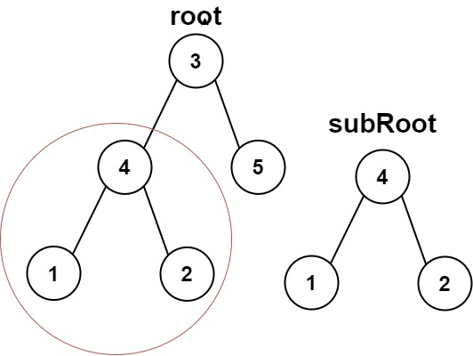
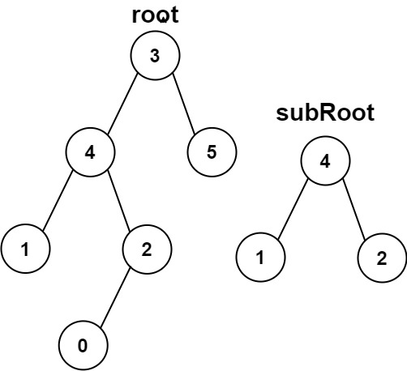

572. 另一棵树的子树
双递归：isSame 判两树是否完全相同；主递归对 root 的每个结点试一次 isSame，任一成功即为子树。
思路
isSame(a, b)：值相等且左右子树都相同才算同一棵树；任一方为空时，两边都空才相等。- 主函数：先在
root本身试isSame，不行就递归到root.left、root.right继续找。 - 最坏每个结点都要和 subRoot 完整比一次，时间 O(mn)。
图解
最优解
1class Solution {2 public boolean isSubtree(TreeNode root, TreeNode subRoot) {3 // 空 root 配不上非空 subRoot4 if (root == null) return false;5 // 从当前结点整树匹配，匹配不上就到左右子树里接着找6 return isSame(root, subRoot) || isSubtree(root.left, subRoot) || isSubtree(root.right, subRoot);7 }8 9 // 两棵树是否完全相同：当前值相等，且左右子树都相同10 private boolean isSame(TreeNode a, TreeNode b) {11 if (a == null || b == null) return a == b;12 return a.val == b.val && isSame(a.left, b.left) && isSame(a.right, b.right);13 }14}题目
给你两棵二叉树 root 和 subRoot 。检验 root 中是否包含和 subRoot 具有相同结构和节点值的子树。如果存在，返回 true ；否则，返回 false 。
二叉树 tree 的一棵子树包括 tree 的某个节点和这个节点的所有后代节点。tree 也可以看做它自身的一棵子树。
示例 1：

输入：root = [3,4,5,1,2], subRoot = [4,1,2] 输出：true
示例 2：

输入：root = [3,4,5,1,2,null,null,null,null,0], subRoot = [4,1,2] 输出：false
提示：
root树上的节点数量范围是[1, 2000]subRoot树上的节点数量范围是[1, 1000]-104 <= root.val <= 104-104 <= subRoot.val <= 104
题面取自力扣当前版本。
数据快照 2026-11-04。题面版权归力扣所有，本站点仅供本人学习使用，请勿对外发布。